Пропорция: равенство двух отношений
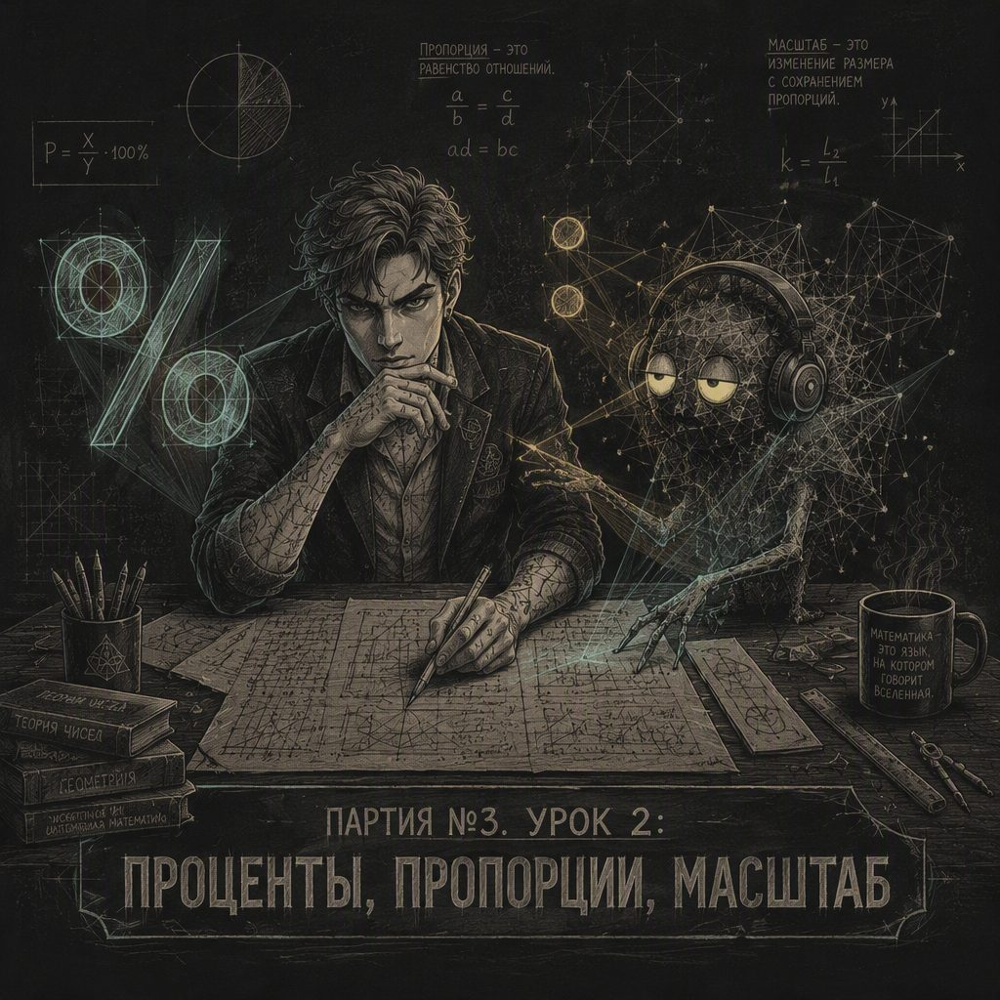
Почему это важно? Пропорция — это главный инструмент для решения задач на проценты, масштабы, зависимости, и вообще любых задач, где две величины жёстко связаны друг с другом. Без понимания пропорции ты не сможешь решить ни одну задачу, где нужно найти неизвестную часть. Это атомарная база.
Пропорция — это равенство двух дробей: \(\frac{a}{b} = \frac{c}{d}\). Числа по краям (\(a\) и \(d\)) называются крайними членами, числа внутри (\(b\) и \(c\)) — средними членами.
Основное свойство пропорции (закон крест-накрест): в любой верной пропорции \(\frac{a}{b} = \frac{c}{d}\) линии креста идут наискосок (в математике эти линии называют диагоналями). Закон абсолютного баланса говорит: если перемножить числа наискосок по одной линии, результат будет строго равен произведению чисел наискосок по другой линии:
Знак равенства посередине означает, что эти две линии полностью уравновешивают друг друга.
Пример. Равны ли дроби \(\frac{2}{3}\) и \(\frac{4}{6}\)? Проверяем наискосок: \(2 \cdot 6 = 12\) и \(3 \cdot 4 = 12\). \(12 = 12\) ✓ — дроби равны.
💡 Лайфхак: Закон работает в обе стороны. Если у тебя есть равенство двух дробей, ты можешь превратить его в равенство произведений наискосок. Если у тебя есть равенство произведений наискосок — ты можешь превратить его в две дроби через знак «равно». Это называется «основное свойство пропорции».
Как решать задачу через пропорцию
Алгоритм «3 шага»:
Шаг 1. Построй пропорцию. Выпиши известные величины и поставь неизвестную букву в нужное место.
Шаг 2. Примени закон крест-накрест: перемножь числа наискосок и запиши их равенство в одну строчку.
Шаг 3. Вырази неизвестное. Числитель дели на знаменатель.
Пример. Выразите \(x\) из \(\frac{x}{7} = \frac{12}{3}\).
Решение: перемножаем крест-накрест: \(x \cdot 3 = 12 \cdot 7\). Делим обе части на 3: \(x = \frac{12 \cdot 7}{3} = 4 \cdot 7 = 28\).
Ответ: \(x = 28\).
🛠️ Практический приём: Если неизвестное стоит в числителе одной из дробей, удобно сразу избавиться от знаменателя: умножь обе части пропорции на этот знаменатель. Например: \(\frac{x}{7} = \frac{12}{3} \Rightarrow x = \frac{12 \cdot 7}{3} = 28\). Так ты сразу получаешь ответ без крестовины.
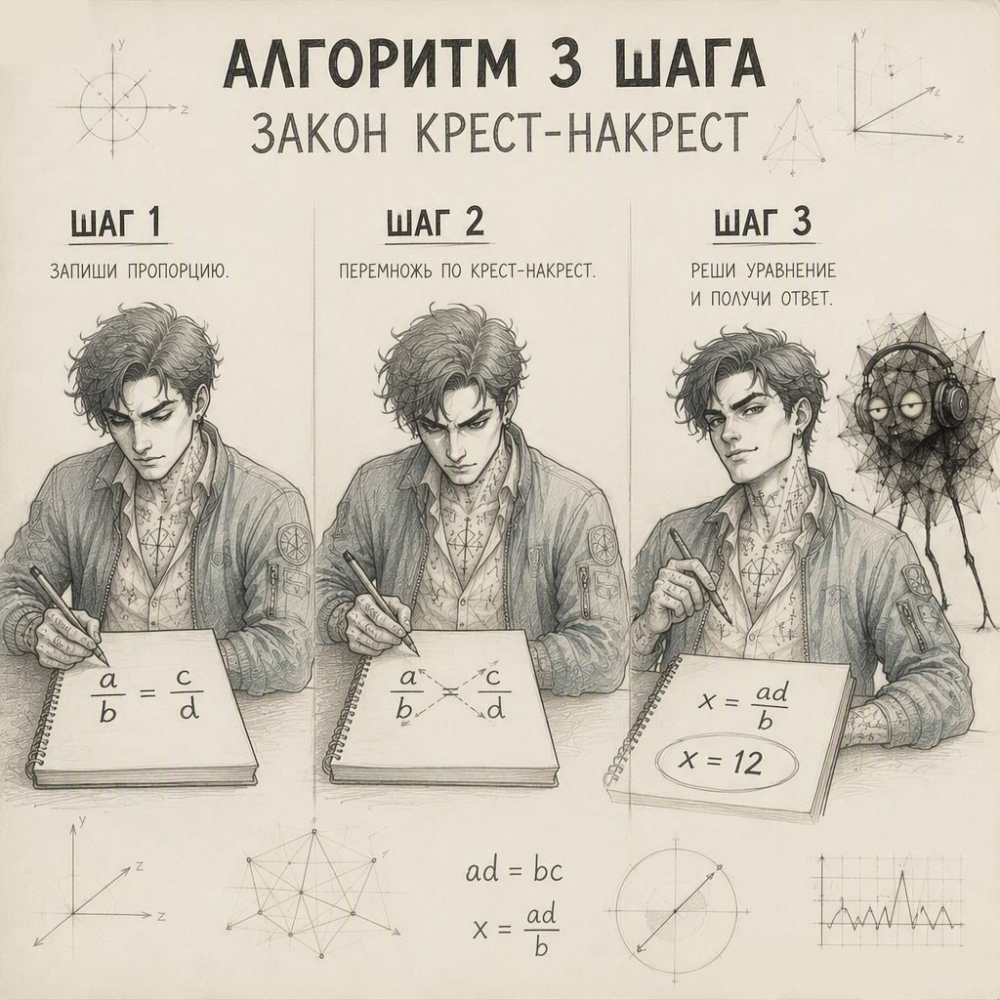
🔍 Как думать при новой задаче на пропорцию:
Когда видишь «найди неизвестное» или «равны ли дроби», не гадай. Иди по плану:
- Выпиши все известные величины в две строки или две колонки. Что известно? Что ищем?
- Построй пропорцию — поставь букву \(x\) в нужное место. Если прямая зависимость — большему соответствует большее.
- Примени закон крест-накрест: \(x = \frac{\text{произведение известных по одной диагонали}}{\text{известное число по другой диагонали}}\).
- Проверь здравый смысл: ответ должен быть больше или меньше ожидаемого по логике задачи.
Свойство пропорции: произведение крест-накрест
Основное свойство пропорции: в верной пропорции \(\frac{a}{b} = \frac{c}{d}\) произведение крайних членов равно произведению средних членов: \(a \cdot d = b \cdot c\). Это и есть закон крест-накрест: числа наискосок друг к другу дают одинаковое произведение.
Это свойство позволяет:
- проверять, верна ли пропорция (перемножить крест-накрест);
- находить неизвестный член пропорции (выразить через остальные три).
⚠️ Жёсткое ограничение: Свойство работает только когда все члены пропорции — числа или выражения, которые можно перемножить. Если в знаменателе окажется 0, свойство не работает (делить на ноль запрещено).
Прямая зависимость: синхронный рост
Почему это важно? В задачах часто две величины двигаются вместе: больше товара — больше денег, больше рабочих — больше объём работы. Это прямая зависимость. Если ты её распознаёшь, задача становится простой пропорцией.
Прямая зависимость «больше → больше»: две величины растут или убывают вместе. Во сколько раз больше взял одну — во столько же раз больше получишь другую.
Пример. Цена шоколадки заморожена. Больше шоколадок (больше) → больше денег на кассе (больше). Если цена одной шоколадки 2 рубля, то за 3 шоколадки заплатишь \(3 \cdot 2 = 6\) рублей, а за 6 шоколадок — \(6 \cdot 2 = 12\) рублей.
Способ через пропорцию: \(\frac{\text{товар}_1}{\text{деньги}_1} = \frac{\text{товар}_2}{\text{деньги}_2}\).
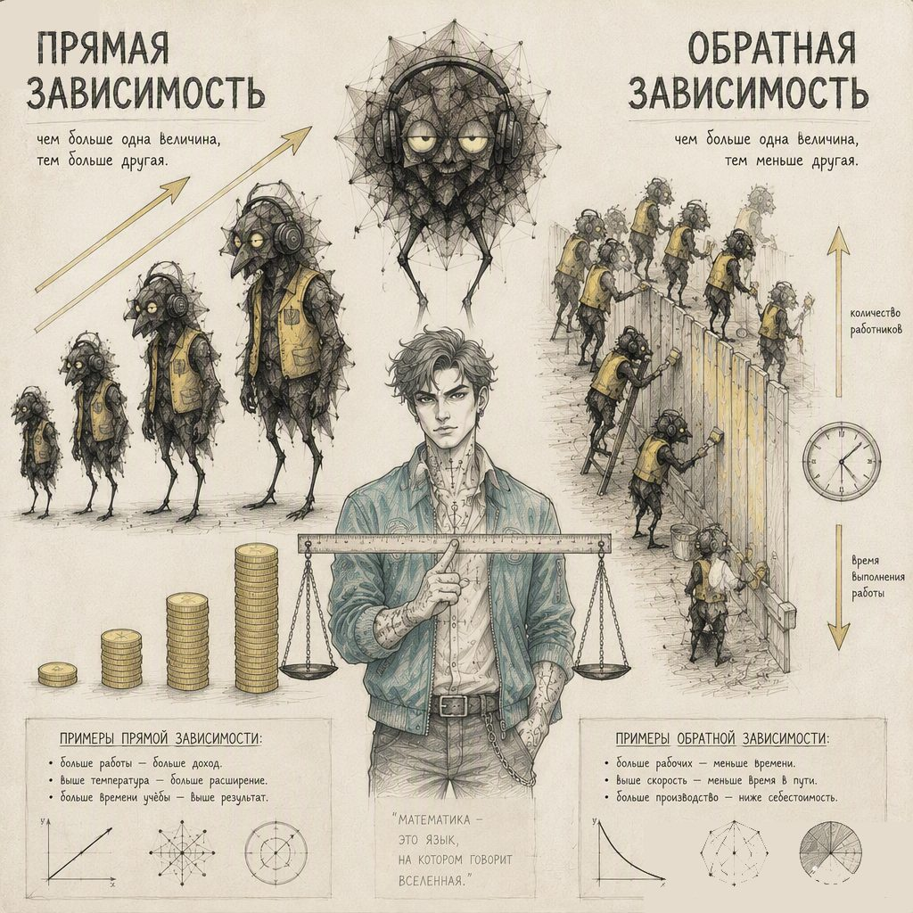
Обратная зависимость: противофаза
Обратная зависимость «больше → меньше»: одна величина растёт, другая падает. Во сколько раз больше сил — во столько раз меньше времени.
Обратная зависимость — это та же пропорция, но с перевёрнутой колонкой. Запишем данные строго друг под другом:
Шаг перехода от таблицы к дроби (показываем явно):
- Берём колонку дней (12, x) — это колонка обратной величины (дни уменьшаются при увеличении людей). Переворачиваем её вверх ногами → получаем (x, 12).
- Берём колонку рабочих (3, 9) — оставляем как есть → (3, 9).
- Собираем дробь: первую колонку делим на вторую.
Итого:
и перемножаем наискосок по закону крест-накрест:
🔑 Правило: в обратной зависимости мы переворачиваем ту колонку, которая соответствует обратной величине. Если дни уменьшаются при увеличении людей — переворачиваем колонку дней. Если скорость растёт при уменьшении времени — переворачиваем колонку времени.
Пример. Расстояние до дома заморожено. Выше скорость (больше) → меньше времени на дорогу (меньше). Если ехать 60 км/ч, до дома 60 км, время = 1 час. Если ехать 120 км/ч (в 2 раза быстрее), время = 0,5 часа (в 2 раза меньше).
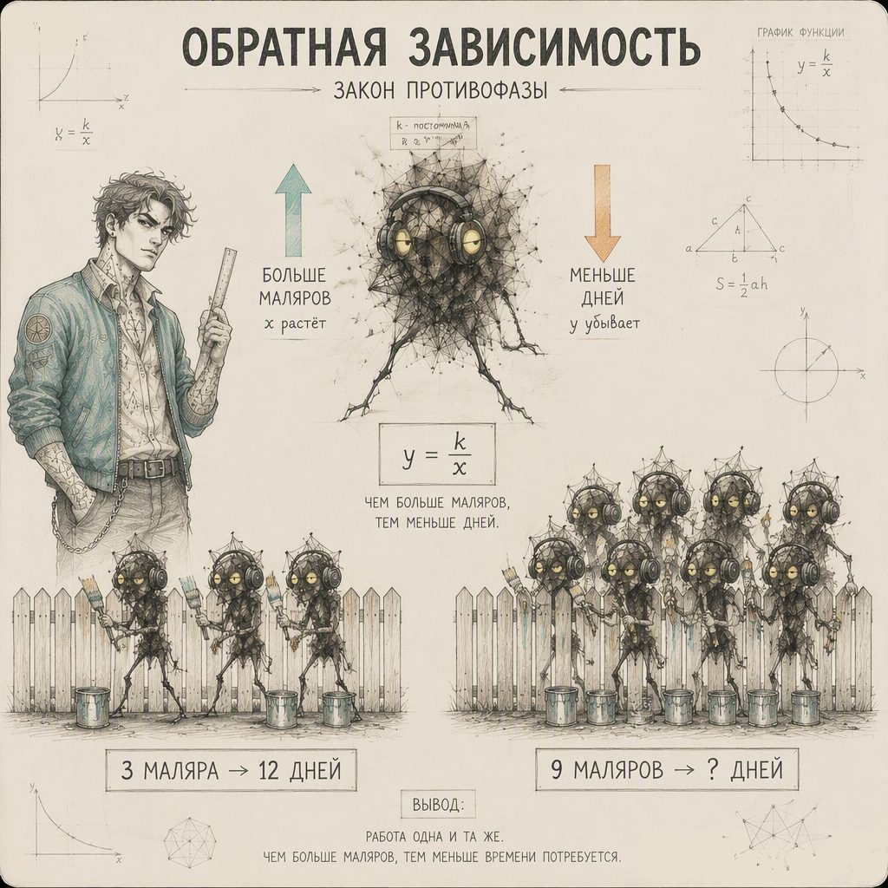
🚨 Возможная ловушка: Составители рассчитывают, что ты перепутаешь прямую и обратную связь и получишь 36 дней вместо 4. 9 человек не могут строить стену в 3 раза дольше, чем 3 человека. Если ответ противоречит здравому смыслу — ты попал в ловушку.
Скрипт самопроверки Блока 2
Прежде чем записать ответ, задай черновику два жёстких вопроса:
Вопрос 1. Проверь тип зависимости: больше одной величины — значит и вторая больше (прямая), или меньше (обратная)? Если сомневаешься — нарисуй стрелки: «больше \(\Rightarrow\) меньше» или «больше \(\Rightarrow\) больше».
Вопрос 2. Подставь ответ обратно в условие: если 9 рабочих строят стену за 4 дня, то \(9 \cdot 4 = 36\) человеко-дней. А 3 рабочих за 12 дней — \(3 \cdot 12 = 36\) человеко-дней. Совпало ✓. Если не совпало — ошибка в арифметике.
🔍 Как думать при новой задаче на зависимость:
Когда видишь «больше/меньше» в задаче, не хватайся за цифры сразу. Иди по плану:
- Определи тип зависимости: если условие говорит «та же работа / то же расстояние» — это обратная. Если «та же цена за единицу» — это прямая.
- Запиши формулу: прямая \(\to\) пропорция через дроби. Обратная \(\to\) произведение в строчку.
- Подставь данные и вырази неизвестное.
- Проверь здравый смысл: ответ должен соответствовать типу зависимости.
Масштаб: отношение чертежа к реальности
Почему это важно? На картах и чертежах мы уменьшаем реальные расстояния в тысячи и миллионы раз, чтобы они поместились на лист бумаги. Знание масштаба позволяет по размеру на бумаге вычислить реальное расстояние, и наоборот.
Масштаб — это отношение размера на чертеже к реальному размеру:
Масштаб всегда записывается как \(1 : X\), где \(X\) — во сколько раз реальный размер больше размера на бумаге. Например, \(1 : 100\) означает, что 1 единица на бумаге = \(X\) единиц в реальности (то есть 1 см на бумаге = 100 см в реальности, или 1 метр).
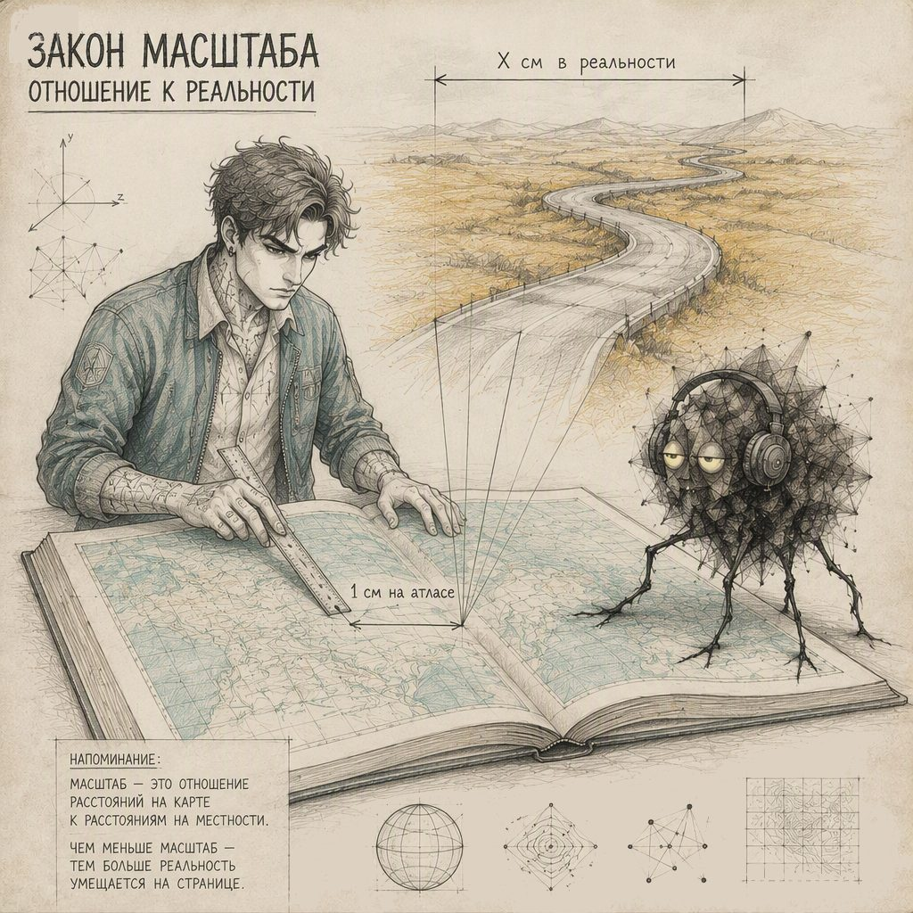
Перевод единиц: метрический мост
Главная трудность — чертеж и реальность даны в разных единицах: миллиметры на бумаге, километры в реальности. Чтобы составить пропорцию, нужно привести всё к одной единице. Самый безопасный выбор — миллиметры.
Почему при переходе от километров к миллиметрам добавляется именно 6 нулей? Разложим этот перевод по шагам:
- В 1 километре содержится ровно 1000 метров (это первые 3 нуля).
- В каждом метре содержится ровно 1000 миллиметров (это ещё 3 нуля).
- Итог: \(3 + 3 = 6\) нулей. Это двойной перевод единиц измерения на черновике.
Таблица перевода в миллиметры:
- Километры (км) \(\to\) миллиметры: \(\times 1\,000\,000\) (6 нулей)
- Метры (м) \(\to\) миллиметры: \(\times 1\,000\) (3 нуля)
- Сантиметры (см) \(\to\) миллиметры: \(\times 10\) (1 ноль)
Обратный перевод (из миллиметров):
- Сантиметры: \(\div 10\) (1 ноль)
- Метры: \(\div 1\,000\) (3 нуля)
- Километры: \(\div 1\,000\,000\) (6 нулей)
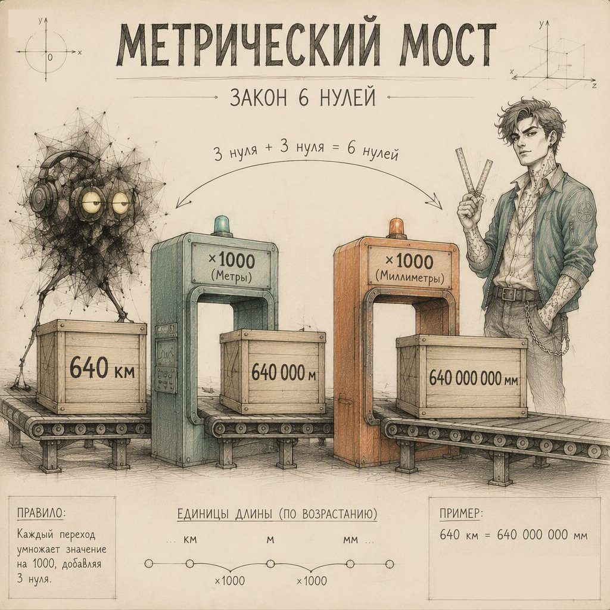
Пример. Реальное расстояние 640 км, на чертеже 16 мм. Переводим км в мм: \(640 \cdot 1\,000\,000 = 640\,000\,000\) мм. Составляем пропорцию: \(\frac{16}{640\,000\,000}\). Сокращаем на 16: \(\frac{1}{40\,000\,000}\).
Масштаб: \(1 : 40\,000\,000\).
💡 Лайфхак: Когда видишь огромное число с нулями, не паникуй. Закрой пальцем все нули в знаменателе и сократи «живые» цифры. В нашем примере живые цифры — 16 наверху и 64 внизу. \(64 \div 16 = 4\). Возвращай нули на место — к четвёрке допиши 7 нулей (один от 640 и шесть от перевода).
Скрипт самопроверки Блока 3
Вопрос 1. Все ли единицы приведены к одному виду перед составлением пропорции? Если на чертеже мм, а в задаче км — нужно перевести.
Вопрос 2. Масштаб получился в виде \(\frac{1}{X}\)? Если получилось наоборот (\(\frac{X}{1}\)) — переверни дробь.
🔍 Как думать при новой задаче на масштаб:
- Запиши обе величины с указанием единиц (что на бумаге, что в реальности).
- Переведи в одну единицу (миллиметры — самый безопасный выбор).
- Составь пропорцию \(\frac{\text{чертеж}}{\text{реальность}}\).
- Сократи дробь до вида \(\frac{1}{X}\). Если нужна реальная длина — умножь число на бумаге на \(X\).
Что такое процент: сотая часть целого
Почему это важно? Слово «процент» встречается в каждой второй жизненной ситуации: скидки в магазине, налоги, банковские ставки, статистика, экзаменационные баллы. Без понимания процента ты не сможешь ни считать сдачу, ни понимать новости, ни решать задачи на ЦТ.
Процент (символ \(\%\)) — это просто одна сотая часть \(\frac{1}{100}\) от какого-то целого числа. Чтобы это было легко представить, используй аналогию с наполненным стаканом воды:
- Полный стакан — это твоё целое, и мы официально принимаем его за \(100\%\).
- Половина стакана — это \(50\%\).
- Пустой стакан — это \(0\%\).
- Два полных стакана — это \(200\%\).
Один процент (\(1\%\)) — это ровно одна сотая часть (одна капля) от объёма этого стакана. Знаменатель такой дроби всегда равен 100, а числитель говорит, сколько процентов сейчас налито.
Процент (символ \(\%\)) — это сотая часть числа. Запись «\(p\%\» означает «\(p\) сотых частей числа», то есть дробь \(\frac{p}{100}\).
Пример. \(1\%\) — это \(\frac{1}{100}\) числа, то есть одна сотая часть. У числа 200 это \(200 \cdot \frac{1}{100} = 2\). У числа 50 это \(50 cdot \frac{1}{100} = 0{,}5\).
Связь с десятичными дробями: \(p\% = \frac{p}{100}\). Например, \(25\% = \frac{25}{100} = 0{,}25\), \(50\% = \frac{50}{100} = 0{,}5\), \(100\% = 1\), \(200\% = 2\).
Связь с обыкновенными дробями: \(p\% = \frac{p}{100}\) — это уже готовая дробь со знаменателем 100. Её можно сократить: \(25\% = \frac{25}{100} = \frac{1}{4}\), \(50\% = \frac{1}{2}\), \(75\% = \frac{3}{4}\).
Главное свойство: целое число принимается за \(100\%\). Это значит, что когда мы говорим «найти \(p\%\) от числа \(A\)», мы находим \(\frac{p}{100}\) от \(A\), то есть \(A \cdot \frac{p}{100}\).
Базовые формулы процентов
Все процентные задачи строятся на трёх формулах. Каждая отвечает на свой вопрос.
---
🔑 Сначала: что такое ЦЕЛОЕ и ЧАСТЬ?
В любой процентной задаче два главных персонажа:
- ЦЕЛОЕ — это то, ЧЕГО мы считаем за 100%. Целимо всегда известно в задаче про "найти процент от числа" (там задано число) И обычно дано в условии в виде конкретной суммы.
- ЧАСТЬ — это то, что мы ищем или что нам дано как процент от целого.
Как распознать ЦЕЛОЕ по формулировкам в условии:
| Формулировка в условии | ЦЕЛОЕ |
|---|---|
| «15% от 200» | 200 (это ЧИСЛО, от которого берём процент) |
| «30 — это 15% от какого-то числа» | ищем число (оно и есть целое) |
| «30 от 200 — это сколько процентов?» | 200 (это ЧИСЛО, относительно которого считаем процент) |
| «цена была 100, стала 120» | 100 (СТАРАЯ цена — это целое, относительно неё считаем изменение) |
| «в растворе 40 г соли, всего 500 г» | 500 (это ОБЩАЯ масса раствора — целое) |
Три главных слова-подсказки:
- «от чего» / «от какого числа» — целое стоит ПОСЛЕ этих слов.
- «составляет X%» — то, что составляет процент, это ЧАСТЬ. То, относительно чего — это ЦЕЛОЕ.
- «было/стало» — «было» = ЦЕЛОЕ, «стало» = новая часть (или новое целое, если изменилось).
---
📐 Три формулы процентов (запомни как триггер):
Формула 1 (часть от целого). Ищем ЧАСТЬ, дано ЦЕЛОЕ и процент.
Где \(A\) — целое (\(100\%\)), \(p\) — процент.
Жизненный сценарий: магазин даёт скидку 15% на товар за 200 руб. Сколько стоит товар со скидкой?
Решение: \(\text{Часть} = 200 \cdot \frac{15}{100} = 30\) руб — это скидка. Цена со скидкой: \(200 - 30 = 170\) руб.
---
Формула 2 (целое по части). Ищем ЦЕЛОЕ, дано ЧАСТЬ и её процент от целого.
Где \(B\) — часть, \(p\) — её процент от целого.
Жизненный сценарий: налог 13% от зарплаты составил 1300 руб. Какова зарплата?
Решение: \(A = \frac{1300 \cdot 100}{13} = 10\,000\) руб.
---
Формула 3 (процент по части и целому). Ищем ПРОЦЕНТ, дано ЧАСТЬ и ЦЕЛОЕ.
Где \(B\) — часть, \(A\) — целое.
Жизненный сценарий: в магазин привезли 200 яблок, из них 30 красных. Сколько процентов красных?
Решение: \(p = \frac{30 \cdot 100}{200} = 15\%\).
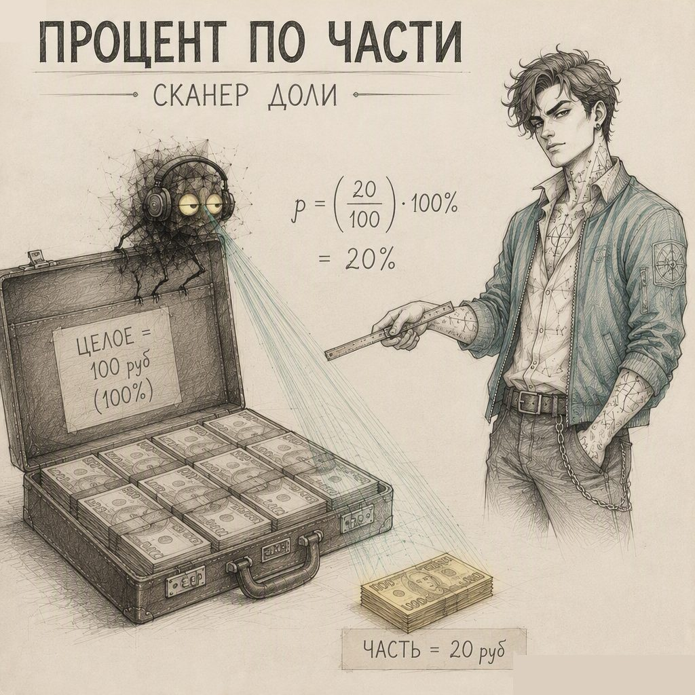
---
💡 Закон-триггер: три формулы процентов — это перестановка одной и той же пропорции. Если помнишь Формулу 1, остальные получаются из неё алгебраически (умножением или делением обеих частей).
🎨 Совет ученикам: не понимаешь что от тебя хотят — рисуй. > Если условие задачи звучит запутанно, не пытайся сразу подставлять числа в формулу. Возьми лист бумаги и: > 1. Нарисуй целое (прямоугольник, круг, банку, отрезок). > 2. Отметь часть (заштрихуй кусок). > 3. Подпиши известные числа (что дано). > 4. Подпиши вопрос (что ищем). > > После этого становится ясно, какую формулу применять. Часто после рисунка ответ очевиден.
🔍 Как думать при новой задаче на процент:
- Прочитай условие дважды. Если не понял с первого раза — прочитай ещё раз.
- Определи, что дано (целое? часть? процент? всё вместе?).
- Определи, что ищем (часть? целое? процент?).
- Если сомневаешься — рисуй (целое как фигуру, часть как заштрихованный кусок).
- Выбери формулу (Формула 1/2/3).
- Подставь данные и вычисли.
- Проверь здравый смысл: \(p\%\) должен быть меньше \(100\%\) (если часть) или больше \(0\%\) (если целое).
Закон перевёртыша: \(a\%\) от \(b\) = \(b\%\) от \(a\)
Открытие. Умножение — коммутативная операция: \(a \cdot b = b \cdot a\). Поэтому для процентов работает симметричный закон:
Пример. Что больше: \(52\%\) от 20 или \(20\%\) от 52? Считаем:
- \(52\%\) от \(20\) = \(20 \cdot 0{,}52 = 10{,}4\).
- \(20\%\) от \(52\) = \(52 \cdot 0{,}20 = 10{,}4\).
Результат одинаковый: \(10{,}4\) в обоих случаях.
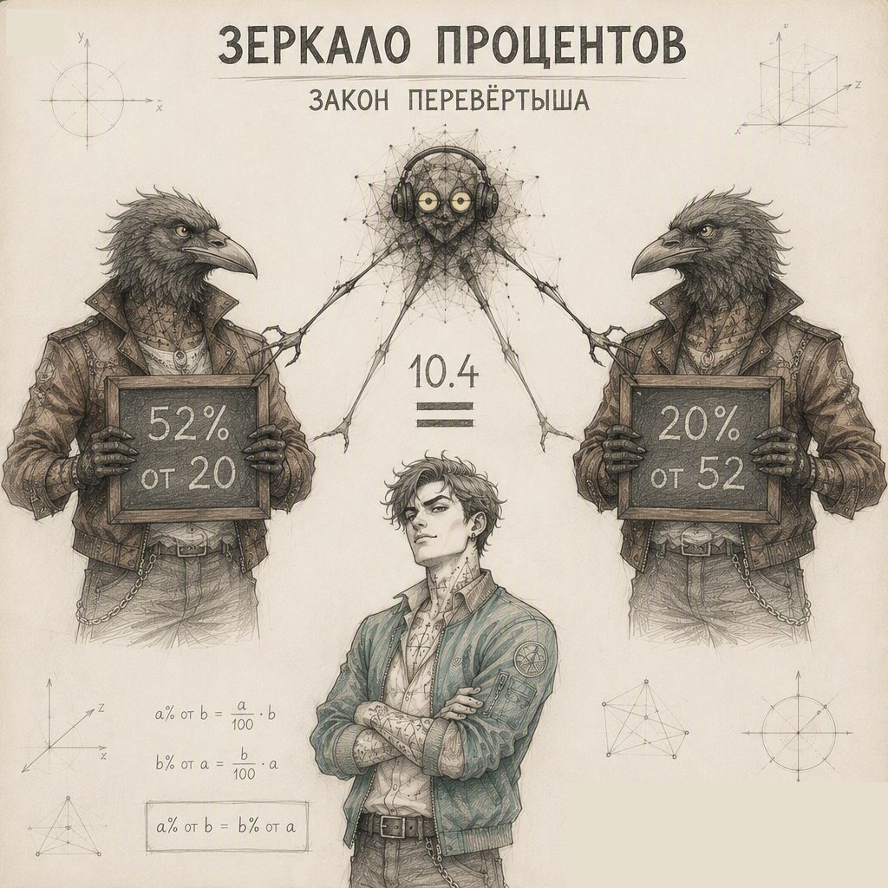
Практический совет: ищи то, что удобнее считать. Если в задаче нужно найти, например, \(15\%\) от \(200\), но это неудобно, можно поменять местами и считать \(200\%\) от \(15\) = \(15 \cdot 2 = 30\) — тот же ответ. Это трюк для устного счёта.
💡 Закон-триггер: в процентах работает коммутативность. Если задача «X% от Y» кажется сложной — попробуй «Y% от X». Может оказаться проще.
🎨 Совет ученикам. Если дан большой процент от маленького числа (например, \(98\%\) от 5), попробуй перевернуть: \(5\%\) от 98 = \(98 \cdot 0{,}05 = 4{,}9\) — то же самое, но считать удобнее.
---
Тип 1: «Найти процент от числа» (скидка, налог, часть)
Сценарий: магазин даёт скидку \(p\%\) на товар стоимостью \(A\) рублей. Сколько стоит товар со скидкой?
Алгоритм:
- Найди размер скидки: \(\text{Скидка} = A \cdot \frac{p}{100}\).
- Вычти скидку из цены: \(\text{Цена со скидкой} = A - \text{Скидка} = A \cdot (1 - \frac{p}{100})\).
Пример. Шоколадка стоит 50 руб (за одну штуку), скидка \(20\%\). Скидка = \(50 \cdot 0{,}2 = 10\) руб. Цена со скидкой = \(50 - 10 = 40\) руб. Или сразу: \(50 \cdot 0{,}8 = 40\).
🛠️ Разбор «двойной скидки» пошагово:
Почему при последовательных скидках в \(20\%\) и \(10\%\) общая скидка равна \(28\%\), а не \(30\%\)? Давай разберём шаги устно:
- Начальная цена товара — \(100\%\). После первой скидки в \(20\%\) цена упала до \(80\%\) от начальной.
- Вторая скидка в \(10\%\) берётся уже от этой новой, уменьшенной цены. Сколько составят \(10\%\) от \(80\%\)? Это \(8\%\).
- Значит, вторая скидка снижает цену ещё на \(8\%\) от первоначальной стоимости.
- Общее снижение цены: \(20\% + 8\% = 28\%\). Оставшаяся стоимость товара — \(72\%\) (или \(0{,}8 \cdot 0{,}9 = 0{,}72\)).
Товар стоил 50 руб. Сначала скидка \(20\%\), потом ещё скидка \(10\%\) от новой цены. Сколько стоит товар?
Шаг 1. Первая скидка: \(50 \cdot 0{,}8 = 40\) руб. Шаг 2. Вторая скидка от НОВОЙ цены: \(40 \cdot 0{,}9 = 36\) руб. Итог: 36 руб.
Реальная общая скидка: \(\frac{50 - 36}{50} = \frac{14}{50} = 28\%\), а не \(30\%\)!
🚨 Возможная ловушка: Скидку \(20\%\) НЕЛЬЗЯ складывать с \(10\%\) и получать \(30\%\). Это ошибка «двойной скидки»: реальная скидка — это не сумма процентов, а умножение долей. Каждая скидка применяется к оставшейся цене, а не к начальной.
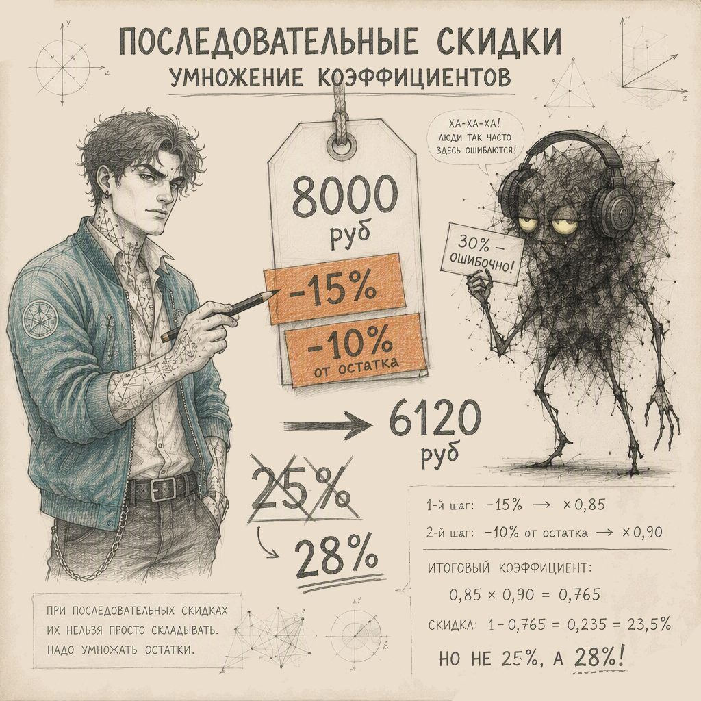
Тип 2: «Найти целое по его проценту» (налог, бюджет)
Сценарий: налог \(p\%\) от стоимости товара составил \(B\) рублей. Какова полная стоимость товара?
Алгоритм: \(A = \frac{B \cdot 100}{p}, \quad p \neq 0\).
Пример. Налог \(13\%\) от зарплаты составил 1300 руб. Зарплата = \(\frac{1300 \cdot 100}{13} = 10\ 000\) руб.
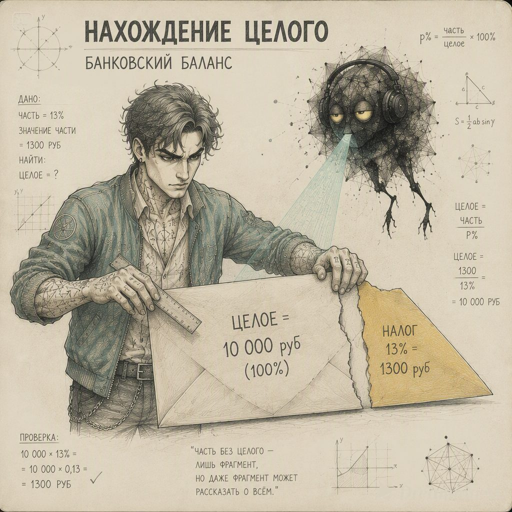
💡 Лайфхак: Если процент маленький (например, \(5\%\)), удобно мыслить так: \(5\%\) — это \(\frac{1}{20}\). Значит, целое в 20 раз больше части.
Простой процент: фиксированная дань
Простой процент — это когда одна и та же процентная ставка применяется к одной и той же исходной сумме каждый период. Например, банк платит \(15\%\) годовых на начальный вклад \(5000\) руб и НЕ добавляет проценты к сумме.
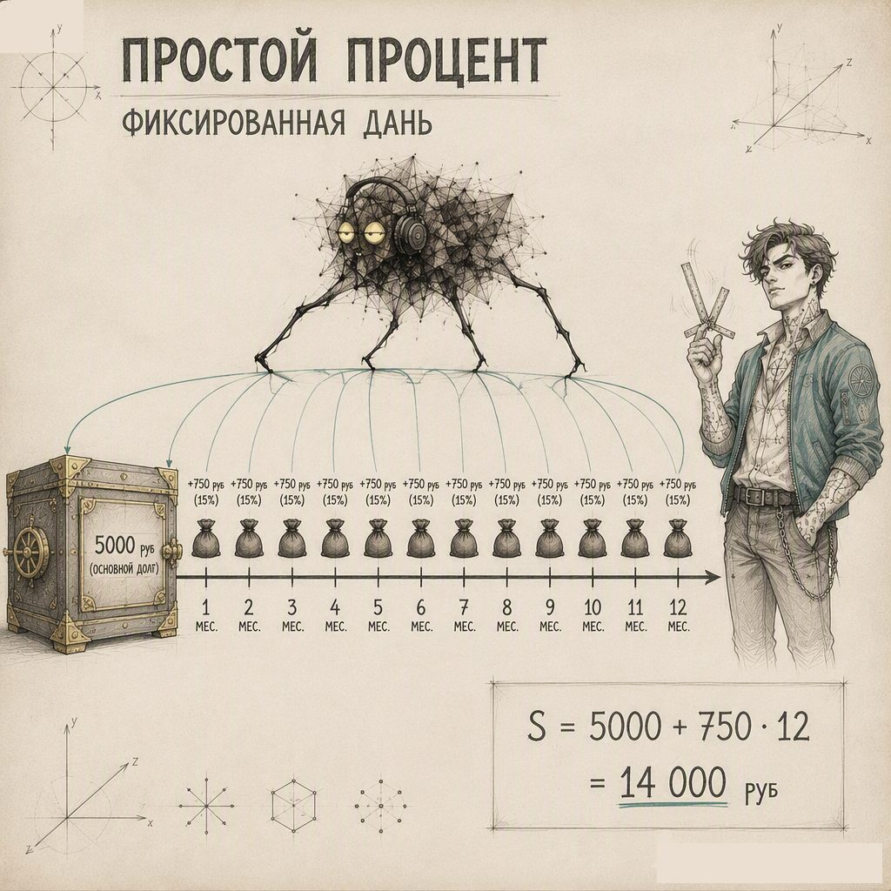
Формула простого процента (\(n\) периодов подряд):
Здесь \(A\) — начальная сумма, \(p\) — процент за один период, \(n\) — число периодов.
Пример с картинки. Начальный вклад \(5000\) руб под \(15\%\) годовых, держим \(12\) месяцев (\(n = 12\)):
💡 Закон-триггер: в простом проценте проценты не складываются с суммой. Каждый месяц ты получаешь \(750\) руб — одну и ту же фиксированную дань. За 12 месяцев получится \(12 \cdot 750 = 9000\) руб процентов.
⚠️ Возможная ловушка: > Простой процент часто путают с ростом зарплаты, инфляцией или банковской капитализацией. Там процент применяется к НОВОЙ сумме — это сложный процент (Слайд 13).
Тип 3: «Сколько процентов составляет часть» (доля, изменение)
Сценарий: цена товара выросла с \(A\) до \(B\) рублей. На сколько процентов она выросла?
Алгоритм: изменение = \(B - A\) (на сколько выросло). Процент = \(\frac{\text{изменение} \cdot 100}{A}\) (делим на СТАРОЕ значение, не на новое).
Пример. Цена была 100 руб, стала 120 руб. Изменение = \(120 - 100 = 20\). Процент = \(\frac{20 \cdot 100}{100} = 20\%\).
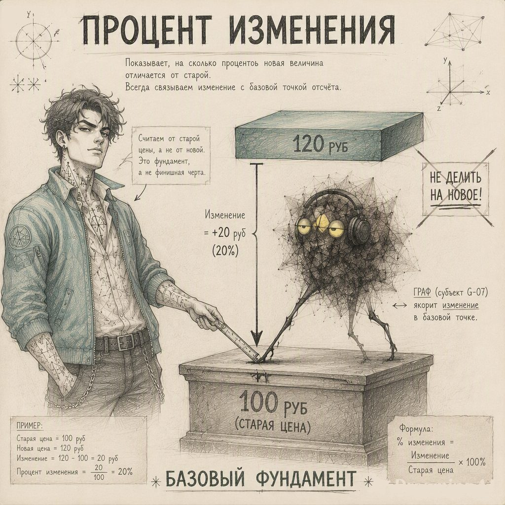
🚨 Возможная ловушка: Процент изменения ВСЕГДА считается от СТАРОГО значения, а не от нового. Если цена упала с 100 до 80, изменение = \(-20\), процент = \(\frac{-20 \cdot 100}{100} = -20\%\) (снижение на \(20\%\)). Если ошибочно делить на новое (80), получишь \(-25\%\) — это математически неверно.
Скрипт самопроверки Блока 5
Вопрос 1. Ты правильно определил тип задачи (часть / целое / процент)? Если перепутал — формула не сработает.
Вопрос 2. Процент изменения считал от СТАРОГО значения, а не от нового?
Задачи на смеси и сплавы (растворы)
Типичная задача. В 500 г раствора соли содержится 40 г соли. Какова концентрация соли в процентах?
Алгоритм «3 шага»:
- Найди часть: масса соли = 40 г.
- Найди целое: масса раствора = 500 г.
- Примени формулу процента по части: \(p = \frac{40 \cdot 100}{500} = 8\%\).
Ответ: \(8\%\).
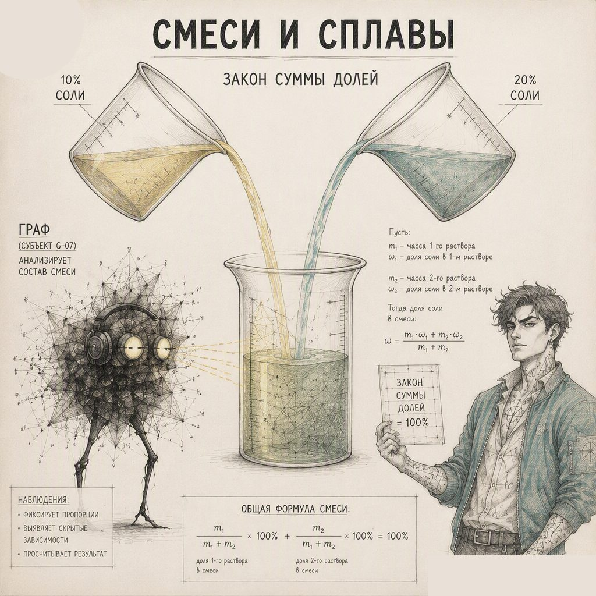
Обратная задача на смешивание. Смешали 200 г \(10\%\)-го раствора и 300 г \(20\%\)-го раствора. Какова концентрация нового раствора?
Алгоритм:
- Найди массу соли в первом растворе: \(200 \cdot 0{,}1 = 20\) г.
- Найди массу соли во втором растворе: \(300 \cdot 0{,}2 = 60\) г.
- Общая масса соли: \(20 + 60 = 80\) г.
- Общая масса раствора: \(200 + 300 = 500\) г.
- Концентрация: \(\frac{80 \cdot 100}{500} = 16\%\).
Ответ: \(16\%\).
Закон суммы долей: абсолютно все компоненты, находящиеся внутри одного сосуда (соль, сахар, кислота, вода), в сумме всегда составляют ровно \(100\%\) от общей массы этого раствора. Если тебе известна доля одного вещества, доля всех остальных вычисляется простым вычитанием из полных \(100\%\).
🚨 Возможная ловушка: Не путай «процент соли» с «процентом воды». В растворе соли \(8\%\) означает \(8\%\) массы — это соль. Остальные \(92\%\) — вода. Если в задаче спрашивают «процент воды», ответ будет \(92\%\), а не \(8\%\).
Что такое сложный процент
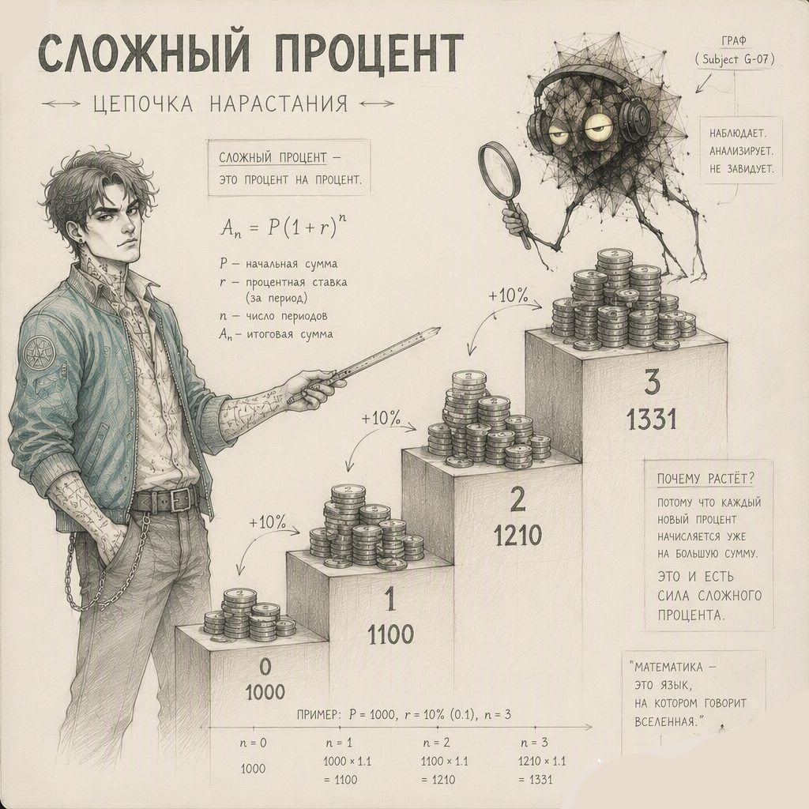
Простой процент — это когда процент применяется один раз к исходной сумме (см. Слайд 12).
Сложный процент — это когда процент применяется несколько раз, причём каждый раз к УЖЕ ИЗМЕНЁННОЙ сумме. После первого применения сумма меняется, и второй процент берётся от НОВОЙ суммы, а не от исходной.
Откуда берётся множитель \(k\)? Каждый год мы оставляем \(100\%\) старой суммы и добавляем \(p\%\) новых процентов. Итого за год получаем \((100 + p)\%\). Чтобы перевести проценты в десятичную дробь, делим на 100: \((100 + p)\% = \frac{100 + p}{100} = 1 + \frac{p}{100}\). Этот множитель обозначают буквой \(k\).
Почему именно формула степени? Каждый год сумма умножается на один и тот же множитель \(k = 1 + \frac{p}{100}\). Получается цепочка умножений: каждый следующий год — это предыдущий, умноженный на \(k\).
- Год 0: \(A\)
- Год 1: \(A \cdot k\)
- Год 2: \(A \cdot k \cdot k = A \cdot k^2\)
- Год 3: \(A \cdot k^3\)
- Год \(n\): \(A \cdot k^n\)
Каждое следующее умножение на \(k\) добавляет одну новую «ступеньку» в цепочке. Поэтому в формуле стоит именно \(k^n\), а не \(n \cdot k\) (как при простом проценте, когда умножение заменяется сложением одного и того же слагаемого).
Мост от простого к сложному. Сравни две формулы:
- Простой процент (Слайд 12): \(S = A \cdot \left(1 + \frac{p \cdot n}{100}\right)\) — один множитель, период стоит МНОЖИТЕЛЕМ.
- Сложный процент: \(S_n = A \cdot \left(1 + \frac{p}{100}\right)^n\) — период стоит в СТЕПЕНИ.
Чтобы из простого получить сложный, нужно период \(n\) «перенести в степень». Это превращает СЛОЖЕНИЕ (\(p + p + p + ...\) в простом) в УМНОЖЕНИЕ (\(k \cdot k \cdot k \cdot ...\) в сложном).
Главный закон сложных процентов: если каждый период применяется один и тот же процент \(p > -100\), то после \(n\) периодов:
Здесь \(A\) — исходная сумма, \(S_n\) — итоговая сумма после \(n\) периодов, \(p\%\) — процент за один период (например, годовой банковский процент), \(n\) — число периодов.
🚨 Возможная ловушка: В формуле \(\left(1 + \frac{p}{100}\right)^n\) скобки возводятся в степень \(n\). Если \(p = 10\%\) и \(n = 3\), нужно посчитать \((1{,}1)^3 = 1{,}331\), а не \(1 + 1{,}1^3 = 1 + 1{,}331 = 2{,}331\). Скобки имеют приоритет.
Задача на сложный процент
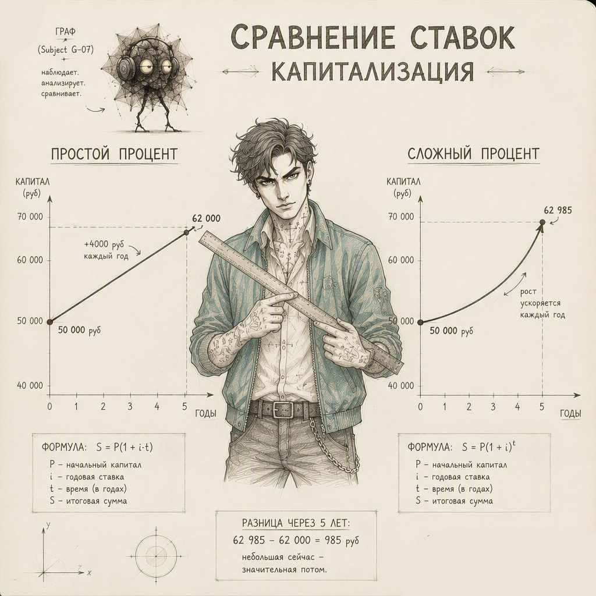
Условие. В банк положили 1000 руб под \(10\%\) годовых. Сколько денег будет на счёте через 3 года (проценты начисляются каждый год и добавляются к сумме)?
Интуиция «почему степень». Каждый год происходит одно и то же: берём текущую сумму и умножаем на \(k = 1{,}1\). Через 3 года это умножение применяется 3 раза подряд. Три одинаковых умножения подряд — это и есть \(k^3\). Если бы процент применялся 5 лет — было бы \(k^5\), если 10 лет — \(k^{10}\).
Решение по шагам:
Год 1: \(1000 \cdot 1{,}1 = 1100\).
Год 2: \(1100 \cdot 1{,}1 = 1210\).
Год 3: \(1210 \cdot 1{,}1 = 1331\).
По формуле (одно действие вместо трёх): \(S_3 = 1000 \cdot (1{,}1)^3 = 1000 \cdot 1{,}331 = 1331\).
Ответ: 1331 руб.
💡 Лайфхак: Если в задаче не сказано «сложный процент» или «капитализация», считай простой процент. Сложный процент — это инвестиции, вклады, инфляция. Простой — скидки, налоги, премии.
Скрипт самопроверки Блока 6
Вопрос 1. В условии явно сказано «сложный процент», «капитализация», «каждый год добавляется к сумме»? Если нет — считай простой.
Вопрос 2. Правильно ли возвёл \((1 + \frac{p}{100})\) в степень \(n\)? Если \(n = 3\) и \(p = 10\), должно быть \((1{,}1)^3 = 1{,}331\).
🔍 Как думать при новой задаче на сложный процент:
- Найди ключевые слова: «каждый год», «капитализация», «с учётом процентов прошлых», «через \(n\) лет под \(p\%\) годовых».
- Подставь в формулу: \(S_n = A \cdot (1 + \frac{p}{100})^n\).
- Вычисли по шагам (если \(n \leq 3\)) или используй калькулятор для степени.
- Проверь: итог должен быть больше исходного (при положительном проценте).
Шпаргалка пропорции
Пример: \(\frac{2}{3} = \frac{4}{6}\), проверка: \(2 \cdot 6 = 12 = 3 \cdot 4\).
Шпаргалка зависимостей
Прямая зависимость «больше → больше»: больше параметр \(A\) \(\to\) больше параметр \(B\). Решение через пропорцию: \(\frac{A_1}{B_1} = \frac{A_2}{B_2}\).
Пример: 3 шоколадки по 2 руб = 6 руб, 6 шоколадок по 2 руб = 12 руб.
Обратная зависимость «больше → меньше»: больше параметр \(A\) \(\to\) меньше параметр \(B\). Решение через строчки: \(A_1 \cdot B_1 = A_2 \cdot B_2\).
Пример: 3 рабочих \(\cdot\) 12 дней = 9 рабочих \(\cdot\) \(x\) дней \(\Rightarrow x = 4\).
Шпаргалка процентов
🔑 Откуда берётся формула (A = \frac{B \cdot 100}{p})? Если часть \(B\) — это \(\frac{p}{100}\) от целого \(A\), то можно записать: \(B = \frac{p}{100} \cdot A\). Чтобы выразить \(A\), делим обе части на \(\frac{p}{100}\):
Это и есть Формула 2. Запомни её не как готовый факт, а как вывод из Формулы 1. Все три формулы процентов — одна пропорция, записанная тремя способами.
| Тип задачи | Формула | Пример |
|---|---|---|
| Часть от целого | \(\text{Часть} = A \cdot \frac{p}{100}\) | \(15\%\) от \(200\):<br>Числовой разбор формулы (буквы → числа):<br>\(\text{Часть} = 200 \cdot \frac{15}{100} = 30\) |
| Целое по части | \(A = \frac{B \cdot 100}{p} \Rightarrow A = \frac{30 \cdot 100}{15} = 200\) | 30 это \(15\%\) \(\to A = 200\) |
| Процент по части | \(p = \frac{B \cdot 100}{A}, \quad A \neq 0\) | 30 от 200 = \(15\%\) |
| Изменение в \(\%\) | \(p = \frac{(B - A) \cdot 100}{A}\) | Цена \(100 \to 120\) = \(+20\%\) |
Шпаргалка масштаба
Пример: реальное 640 км, на бумаге 16 мм. Перевод: \(640 \cdot 1\,000\,000 = 640\,000\,000\) мм. Масштаб = \(\frac{16}{640\,000\,000} = \frac{1}{40\,000\,000}\).
Шпаргалка сложных процентов
Пример: 1000 руб под \(10\%\) на 3 года: \(S_3 = 1000 \cdot 1{,}1^3 = 1000 \cdot 1{,}331 = 1331\) руб.
Зачем тебе всё это: мотивация перед экзаменом
Проценты, пропорции и масштабы — это не школьная формальность, а реальный рабочий инструмент.
Когда ты поймёшь, как они устроены, ты сможешь:
- Считать скидки в магазине без калькулятора.
- Понять условия банковского вклада.
- Разобраться в новостях про инфляцию.
- Решать задачи ЦТ, не путаясь в формулировках.
Математика становится лёгкой не когда зазубришь формулы, а когда научишься их собирать из пропорции. Это твой главный инструмент.
---
Задача на сложную скидку в два этапа
Условие. Товар стоил 8000 руб. Магазин сначала снизил цену на \(15\%\), потом ещё на \(10\%\) от новой цены. Какова итоговая цена?
Что прячется в формулировке: две последовательные скидки — это не \(15 + 10 = 25\%\), а умножение коэффициентов.
Решение по шагам:
- После первой скидки: \(8000 \cdot 0{,}85 = 6800\) руб.
- После второй скидки: \(6800 \cdot 0{,}9 = 6120\) руб.
Итоговая цена: 6120 руб.
Проверка через формулу сложного процента: \(8000 \cdot 0{,}85 \cdot 0{,}9 = 8000 \cdot 0{,}765 = 6120\) ✓.
⚠️ Возможная ловушка: ученик складывает проценты скидок (\(15 + 10 = 25\%\)) и получает \(8000 \cdot 0{,}75 = 6000\) — неверно. Скидки применяются последовательно, не суммируются.
Задача на процент от процента (рост населения)
Условие. Население города составляло 50000 человек. За первый год оно выросло на \(4\%\), за второй — ещё на \(6\%\). Каким стало население?
Решение:
- После первого года: \(50000 \cdot 1{,}04 = 52000\).
- После второго года: \(52000 \cdot 1{,}06 = 55120\).
Ответ: 55120 человек.
⚠️ Возможная ловушка: ученик считает «общий процент» как \(4 + 6 = 10\%\) и получает \(55000\) — неверно. Реальный рост: \(1{,}04 \cdot 1{,}06 = 1{,}1024\), то есть \(10{,}24\%\), а не \(10\%\).
Задача на смешивание растворов (разные концентрации)
Условие. Имеется 300 г \(15\%\)-го раствора соли и 500 г \(25\%\)-го раствора. Их смешали. Какова концентрация нового раствора?
Решение:
- Соль в первом растворе: \(300 \cdot 0{,}15 = 45\) г.
- Соль во втором растворе: \(500 \cdot 0{,}25 = 125\) г.
- Общая соль: \(45 + 125 = 170\) г.
- Общий раствор: \(300 + 500 = 800\) г.
- Концентрация: \(\frac{170 \cdot 100}{800} = 21{,}25\%\).
Ответ: \(21{,}25\%\).
Задача на масштаб карты (большие числа)
Условие. Расстояние между городами на карте с масштабом \(1 : 500\ 000\) равно 8 см. Каково реальное расстояние в км?
Решение:
- 1 см на карте = 500 000 см в реальности.
- 8 см = \(8 \cdot 500\ 000 = 4\ 000\ 000\) см.
- Перевод в км: \(4\ 000\ 000 \div 100\ 000 = 40\) км (1 км = 100 000 см).
Ответ: 40 км.
⚠️ Возможная ловушка: ученик забывает перевести сантиметры в километры и пишет 4 000 000 см, не понимая, насколько это много. Помни: в 1 км = 100 000 см (не 1000!).
Задача на прямую и обратную зависимость (ловушка направления)
Условие. 5 маляров красят забор за 12 дней. За сколько дней покрасят тот же забор 3 маляра?
Что прячется: это ОБРАТНАЯ зависимость (объём работы заморожен). Больше рабочих → меньше дней.
Что значит «перевёрнутая»? Если 5 маляров → 12 дней, то 3 маляра → ? дней. При обратной зависимости больше рабочих соответствует меньшему количеству дней. Поэтому пропорция переворачивается: первая дробь становится \(\frac{5}{3}\) (больше/меньше), а вторая \(\frac{x}{12}\) (неизвестное/больше).
Составляем перевёрнутую пропорцию: \(\frac{5}{3} = \frac{x}{12}\). Отсюда по закону крест-накрест (перемножаем числа наискосок) переходим к уравнению в одну строчку:
Ответ: 20 дней.
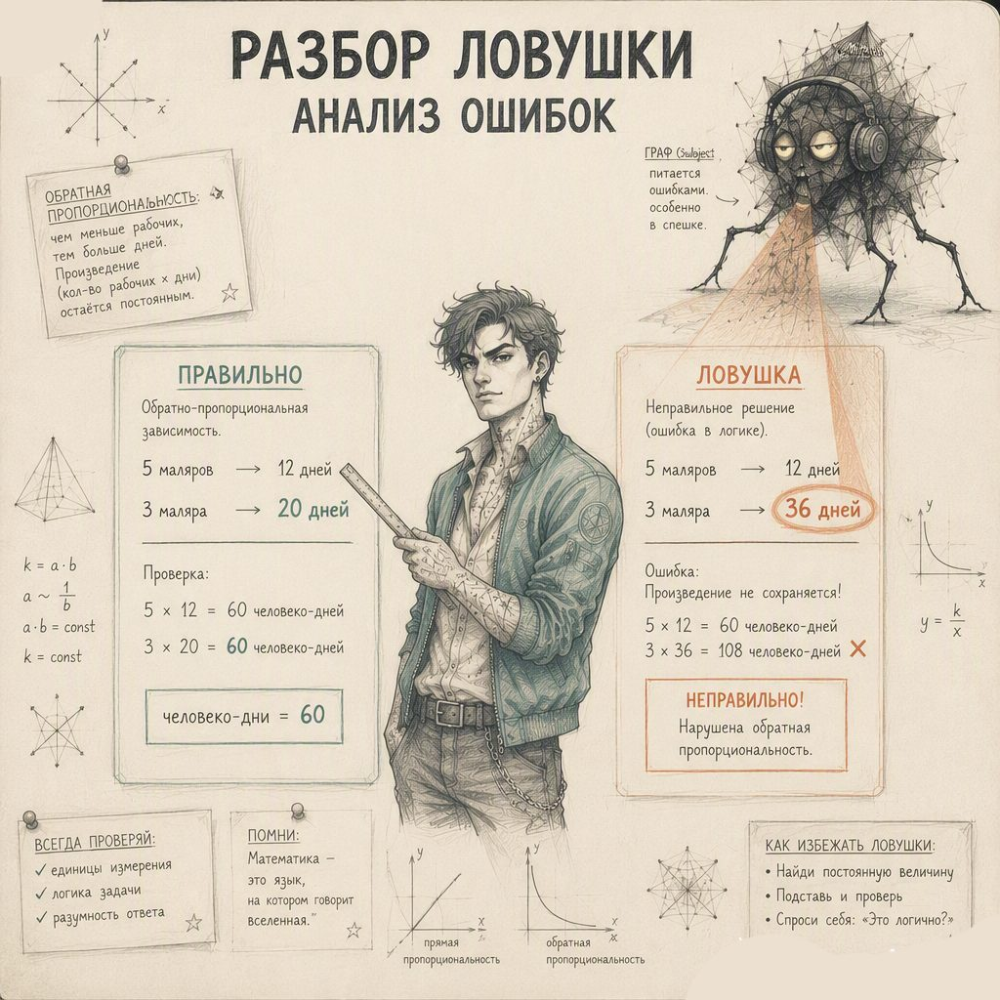
⚠️ Возможная ловушка: ученик думает «меньше рабочих → больше дней, значит отвечу что-то большое типа 20». Но если бы ошибся типом зависимости и считал прямую, получил бы \(5/3 \cdot 12 = 20\) — формально правильно число, но по ошибке. Всегда проверяй тип зависимости по смыслу задачи.
Задача на процент изменения (от старого)
Условие. Цена товара выросла с 400 до 500 руб. На сколько процентов она выросла?
Решение: изменение = \(500 - 400 = 100\). Процент = \(\frac{100 \cdot 100}{400} = 25\%\).
Ответ: \(25\%\).
⚠️ Возможная ловушка: ученик делит на НОВУЮ цену: \(\frac{100 \cdot 100}{500} = 20\%\) — неверно. Процент изменения ВСЕГДА от старого значения.
Задача на сложный процент (банковский вклад)
Условие. В банк положили 50000 руб под \(8\%\) годовых с ежегодной капитализацией. Сколько денег будет через 3 года?
Решение по шагам (без калькулятора):
Формула сложных процентов (Слайд 14):
Почему именно 1,08? Каждый год мы оставляем 100% старой суммы и прибавляем 8% новых процентов. Итого получаем \(100\% + 8\% = 108\%\). В десятичной дроби это 1,08. Этот множитель применяется каждый год.
Чтобы не возиться с десятичными дробями, распишем степень как три последовательных умножения. Одно и то же действие повторяется три раза, только сумма каждый раз новая:
Год 1: \(50000 \cdot 1{,}08 = 500 \cdot 108 = 54000\) руб.
Год 2: \(54000 \cdot 1{,}08 = 540 \cdot 108 = 58320\) руб.
Год 3: \(58320 \cdot 1{,}08 = 583{,}2 \cdot 108 = 62985{,}6\) руб.
💡 Закон-триггер: одно и то же умножение на 1,08 повторяется каждый год — сумма каждый раз становится новой базой для следующего умножения. Именно поэтому формула называется «сложный процент» (compound interest).
Ответ: \(62\)\nbsp985,60 руб.
⚠️ Возможная ловушка: ученик путает простой и сложный процент. Простой: \(50000 + 50000 \cdot 0{,}08 \cdot 3 = 62000\). Сложный (с капитализацией): 62985,60 — больше. Разница существенна на длинных сроках.
Пропорциональность через прямоугольники (участки)
Условие. Ширина участка Иванова равна 72 м, а длина — 96 м. Ширина участка Петрова на 15 м меньше ширины участка Иванова. Чему равна длина участка Петрова (в м), если отношение ширины к длине у обоих участков одинаково?
Что прячется в формулировке: пропорция не обязательно решается числами на координатной прямой. Здесь она «живёт» в геометрии: два прямоугольника (большой и маленький) имеют одинаковое отношение сторон — это и есть пропорциональность.
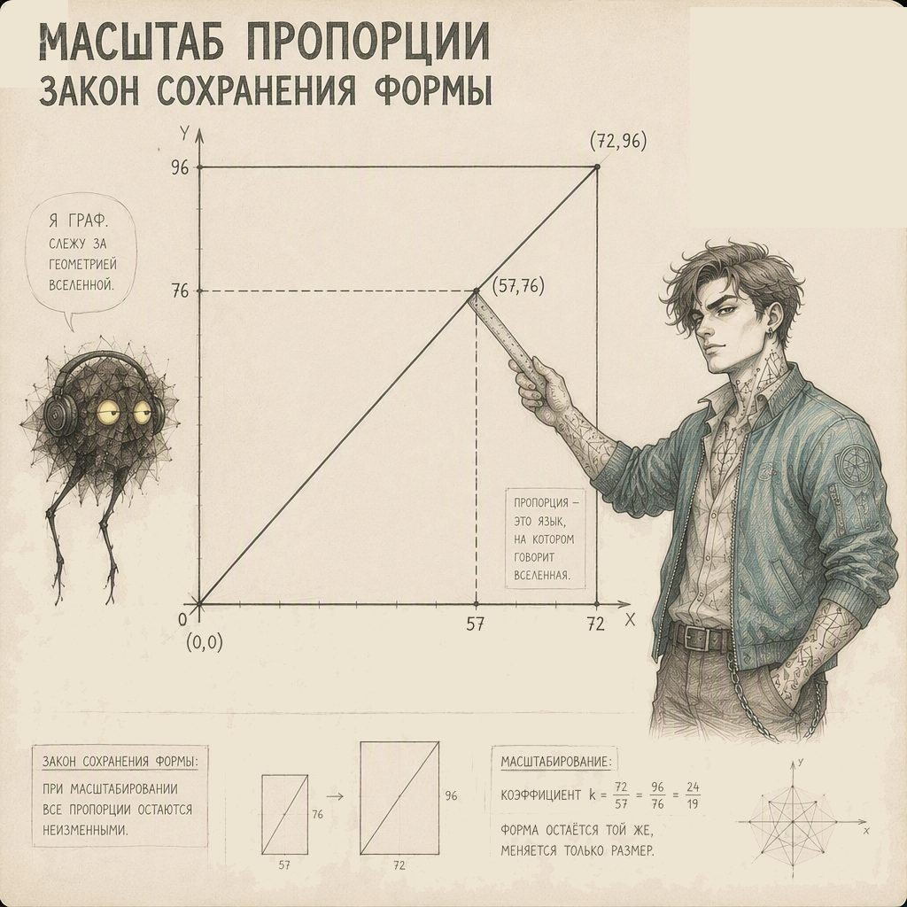
Решение по шагам (через пропорцию):
- Отношение ширины к длине Иванова: (\frac{72}{96} = \frac{3}{4}) (сократили на 24).
- Ширина Петрова: \(72 - 15 = 57\) м.
- Обозначим длину Петрова за \(x\). Составляем пропорцию: \(\frac{57}{x} = \frac{72}{96}\).
- По закону наискосок: \(57 \cdot 96 = 72 \cdot x\).
- \(x = \frac{57 \cdot 96}{72} = \frac{5472}{72} = 76\) м.
Ответ: 76 м.
🪞 Интуиция через прямоугольник. Если нарисовать прямоугольник Иванова (72×96) и внутри него маленький прямоугольник Петрова (57×76), у них будет одинаковое отношение сторон: 57/76 = 72/96 = 3/4. Это и есть пропорциональность: при изменении размера форма сохраняется.
⚠️ Возможная ловушка: ученик путает «ширина» и «длина» местами. В условии чётко сказано «ширина Иванова 72, длина 96». Если поменять их местами, получишь \(\frac{72}{57} = \frac{96}{x} \Rightarrow x = 76\), что случайно даёт тот же ответ. Но в других задачах такая ошибка будет фатальной. Всегда выписывай, ЧТО стоит в числителе, а ЧТО — в знаменателе.
Переливание жидкости (баланс объёмов)
Условие. В двух сосудах содержится 36 л жидкости. Если 10% жидкости из первого сосуда перелить во второй, то в обоих сосудах окажется одинаковое количество жидкости. Сколько литров жидкости было во втором сосуде первоначально?
Что прячется: при переливании 10% из первого во второй — количество во втором увеличивается ровно на ту же величину, на которую уменьшается первое. Если после этого они сравнялись, значит, изначально во втором было на 20% меньше, чем в первом.
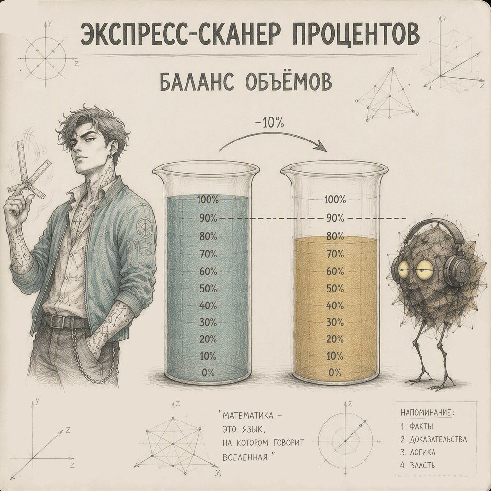
Решение по шагам:
- Пусть в первом сосуде \(x\) л, во втором \((36 - x)\) л.
- Переливаем 10% из первого во второй. 10% от \(x\) = \(0{,}1x\).
- После переливания: первый = \(x - 0{,}1x = 0{,}9x\), второй = \((36 - x) + 0{,}1x = 36 - 0{,}9x\).
- По условию они равны: \(0{,}9x = 36 - 0{,}9x\).
- \(1{,}8x = 36 \Rightarrow x = 20\) л (было в первом).
- Во втором: \(36 - 20 = 16\) л.
Ответ: 16 л.
🪞 Визуальная интуиция. Если ученик умеет рисовать, он может нарисовать два стакана разной высоты (один почти полный, второй — на 20% ниже). После того как 10% перельётся из высокого в низкий, уровни сравняются. Это и есть визуальный смысл уравнения.
⚠️ Возможная ловушка: ученик забывает, что 10% переливается из ПЕРВОГО во ВТОРОЙ, и составляет уравнение «наоборот»: переливает из второго в первый. Получает ответ 20 л (как объём первого), а не 16 л (объём второго). Всегда проверяй направление переливания по условию.
Квартиры в двух домах (баланс через переменные)
Условие. В жилом доме «Альфа» 13% от общего числа квартир составляют однокомнатные, а в жилом доме «Омега» 61% от общего числа квартир — однокомнатные. 16% всех квартир в двух домах вместе — однокомнатные. Во сколько раз больше общее количество квартир в жилом доме «Альфа», чем в «Омеге»?
Что прячется: в задаче 3 неизвестных (число квартир в Альфе, в Омеге, и число однушек в каждом). Связаны 2 условиями: процент однушек в каждом доме + процент однушек в среднем. Нужно выразить всё через одну переменную.
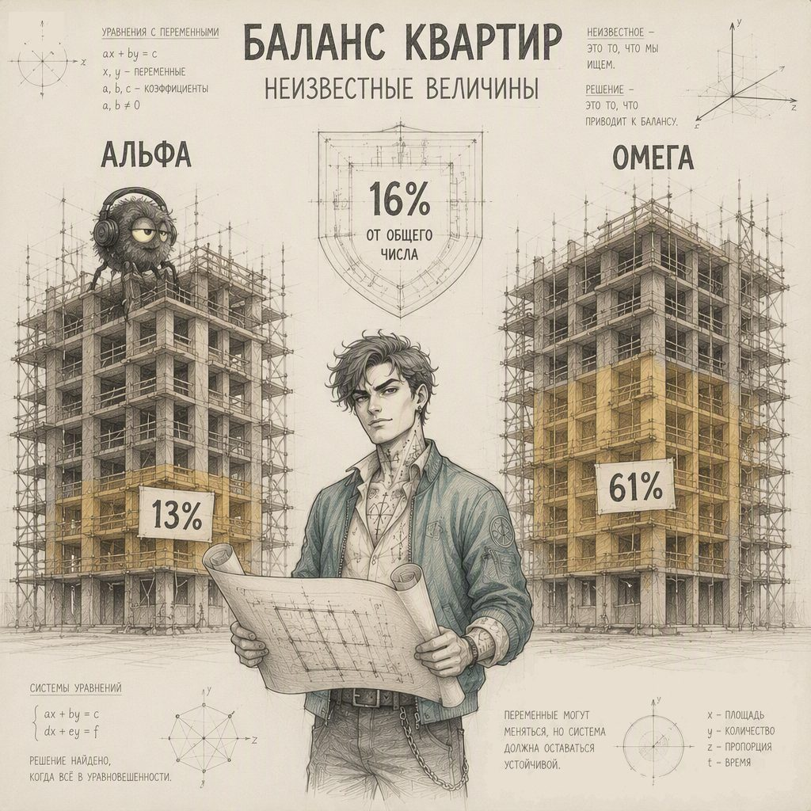
Решение по шагам (метод переменных):
- Пусть в Альфе \(A\) квартир, в Омеге — \(\Omega\) квартир. Всего: \(A + \Omega\).
- Однушек в Альфе: \(0{,}13A\).
- Однушек в Омеге: \(0{,}61\Omega\).
- Всего однушек: \(0{,}13A + 0{,}61\Omega\).
- По условию: \(\frac{0{,}13A + 0{,}61\Omega}{A + \Omega} = 0{,}16\).
- \(0{,}13A + 0{,}61\Omega = 0{,}16A + 0{,}16\Omega\).
- \(0{,}45\Omega = 0{,}03A\).
- \(\frac{A}{\Omega} = \frac{0{,}45}{0{,}03} = 15\).
Ответ: в Альфе в 15 раз больше квартир, чем в Омеге.
🪞 Интуиция через «средневзвешенное значение». 16% — это средневзвешенное двух процентов (13% и 61%). Так как 16% ближе к 13%, то Альфа (с меньшим процентом однушек) должна занимать большую долю в общем количестве. А значит, в Альфе квартир значительно больше.
⚠️ Возможная ловушка: ученик переворачивает ответ и пишет «в 15 раз меньше». Также частая ошибка: делить \(\Omega\) на \(A\) вместо \(A\) на \(\Omega\). Всегда проверяй, что ищем: «во сколько раз Альфа больше Омеги» означает \(\frac{A}{\Omega}\), а не \(\frac{\Omega}{A}\).
v3.2 — добавлены 9 новых иллюстраций и кремовый фон. Встроены картинки: titulnik-procenty.png → Слайд 1 (титульник партии); krest-nakrest.png → Слайд 2 (алгоритм 3 шага); obratnaya-zavisimost.png → Слайд 5 (закон противофазы); chislo-ot-tselogo.png → Слайд 11 (банковский баланс); smesi-splavy.png → Слайд 13.2 (закон суммы долей); slozhnyy-procent-cepochka.png → Слайд 14 (цепочка нарастания, заменила предыдущую); oshibki-analiz.png → Слайд 22.4 (разбор ошибки маляров); skidki-posledovatelnye.png → Слайд 10 (последовательные скидки, заменила предыдущую). Всего 22 иллюстрации в слайдах. Кремовый фон страницы (\#F5F2EB) — картинки сидят как влитые.